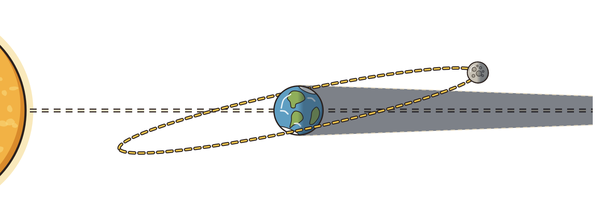

About this simulation & standards
Connect the Moon’s orbit with its appearance from Earth. Investigate phases, tilted shadow misses, and solar and lunar eclipses.
EARTH & SPACE · GRADES 6–8
TEKS 6–8.1G · models · TEKS 7.9A · partial · MS-ESS1-1 · partial
Connections may address only part of a standard; consult the lab’s model and alignment notes.
:
